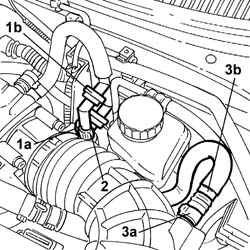

3330D46 Vacuum increase valve flexible pipe (one)
- Path
- Procedures > 33 BRAKES > 3330 HYDRAULIC BRAKING SYSTEM > 3330D BRAKE VACUUM SYSTEM > 3330D46 Vacuum increase valve flexible pipe (one)
- Kind
- repair procedure (removal / refitting; the operation number is the code)
- Applies to
- all engines; all production periods
- Interactive page
- https://sloeber94.github.io/elrnDB-lThss/en/#/156227
Applies to: all engines; all production periods
 Removing
Removing
 Refitting
Refitting- Open the bonnet
1. Open the bands (1a) retaining the vacuum increase valve (1b).
2. Disconnect the flexible pipe from the lower part of the valve.
3. Open the band (3a) fastening the flexible pipe (3b) to the air intake hose and remove it.

Applies to: all engines; all production periods
Refitting
Removing- Position the flexible pipe and secure it to the air intake hose, then close the retaining band.
- Connect the pipe to the lower part of the vacuum increase valve.
- Position the valve and close the retaining bands.
- Close the bonnet.